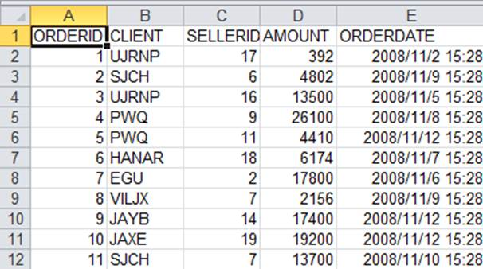

9.3XML data
The XML format is suitable to store tree-structured data. It is thus usually used to store configuration files. The format can also store data in string format.
Let¡¯s look at how to use XML data as the data source through a simple example:
|
|
A |
|
1 |
=file("data.xml") |
|
2 |
=A1.read().import@x() |
|
3 |
=xml(A1.read()) |
|
4 |
=A1.read().import@x(;"data") |
A1 reads string data from the data.xml file. Below is the file:
<?xml version="1.0" encoding="ISO-8859-13"?>
<data>
<cities>
<CID>1</CID>
<NAME>"New York"</NAME>
<POPULATION>8084316</POPULATION>
<STATEID>32</STATEID>
</cities>
<cities>
<CID>2</CID>
<NAME>"Los Angeles"</NAME>
<POPULATION>3798981</POPULATION>
<STATEID>5</STATEID>
</cities>
<cities>
<CID>3</CID>
<NAME>"Chicago"</NAME>
<POPULATION>2886251</POPULATION>
<STATEID>13</STATEID>
</cities>
<state>
<STATEID>1</STATEID>
<NAME>"Alabama"</NAME>
<ABBR>"AL"</ABBR>
</state>
<state>
<STATEID>2</STATEID>
<NAME>"Alaska"</NAME>
<ABBR>"AK"</ABBR>
</state>
</data>
The xml defines the highest level node data and stores data of two tables: cities and state. The node name for each record is the table name, under which fields and corresponding values are listed. A2 reads a string from the file using the read function and imports it with the import@x function:
The XML string will be parsed as one record. Double click each field to see the detailed data:
cities and state are interpred as the two fields of the record.
A2¡¯s expression can be written as A3¡¯s xml() function. The two methods of reading data have the same result:
You can specify the node to be read in the import@x() function, as shown in A4. Here¡¯s A4¡¯s result:

The XML format supports using various ways to define the value of a node. For example:
<?xml version="1.0" encoding="ISO-8859-13"?>
<data>
<state>
<STATEID NAME="Alabama" ABBR="AL">1</STATEID>
<STATEID NAME=" Alaska" ABBR="AK">2</STATEID>
</state>
</data>
We use the xml@s() function to read this types of XML data:
|
|
A |
|
1 |
file("data2.xml") |
|
2 |
=xml@s(A1.read()) |
Here¡¯s A2¡¯s result:
